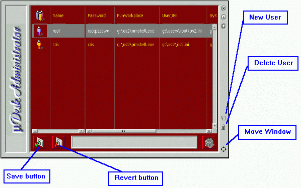

Save button: saves all informations about users.Revert button: reverts to the last saved status. NOTE that it simply re-reads the user information from disk: it will NOT undo desktop creations and such.
New user: start creation of a new user.
Delete user: start removal of a user.
Move: moves the window around. Click on it, and then use arrow keys to position the window. Press any other key when done (you will see the icon change).
N.B. To change user settings, you can use in-place editing.